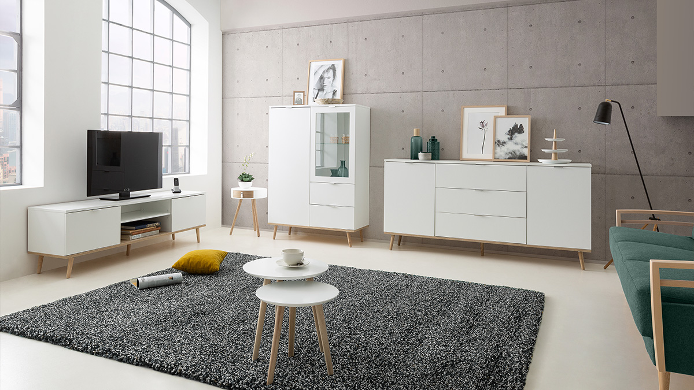

· Cura della casa ·
Ti diamo il benvenuto nella nostra guida per aiutare le persone che cercano aiuto per diventare autonomi, saranno presenti molti aspetti da attenzionare per prevenire tutti quei problemi che si possono verificare in casa.
Capita a tutti quel periodo della vita in cui prima o poi dobbiamo abbandonare le comodità e rimboccarci le maniche. Ciò è fondamentale specialmente in una fase della vita in cui iniziamo a sbrigare tutto senza l’ausilio dei genitori, esatto si tratta proprio di come comportarsi quando si va a vivere da soli.
Sezione Pietanze

Una serie di primi e secondi piatti economici, facili e veloci da preparare, ideali per quando si è soli oppure nel caso qualcuno vi sorprende all'ultimo minuto con una visita
Sezione Lavatrice

Il detersivo va inserito nel simbolo del cassetto che ha il numero 2. L’ammorbidente va inserito nel simbolo del fiore.
Sezione Regolamento in Condominio

Esistono 7 regole per una buona convivenza in un appartamento. Sicuramente le regole sarebbero state molte di più, ma è meglio prendere quelle più essenziali per vivere il benessere condominiale.